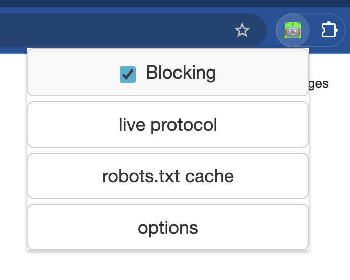
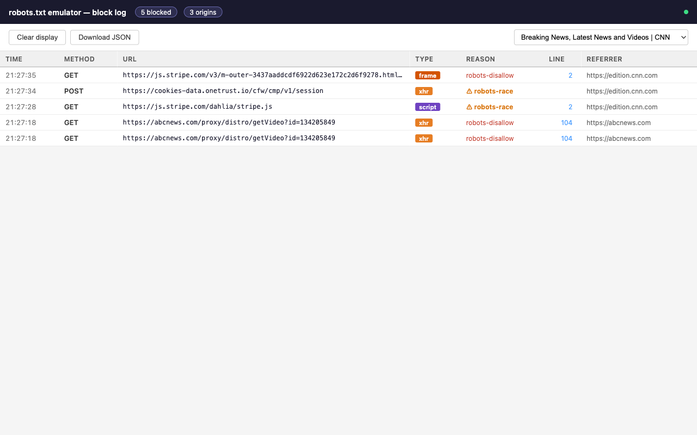
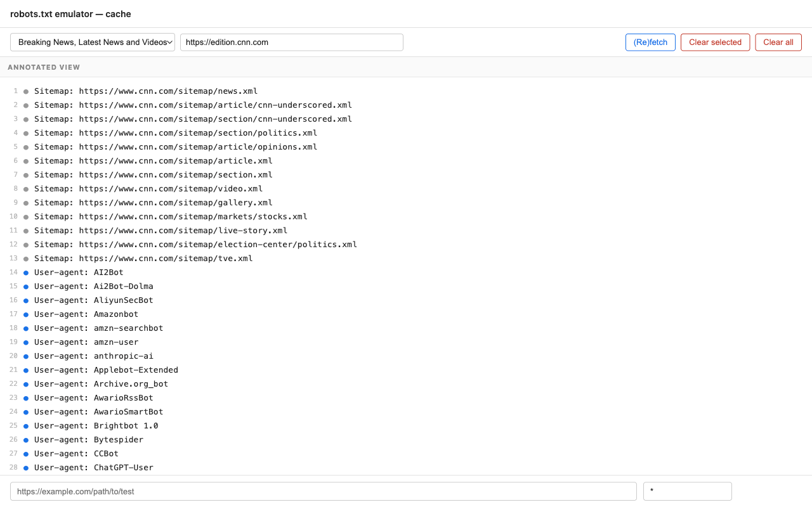
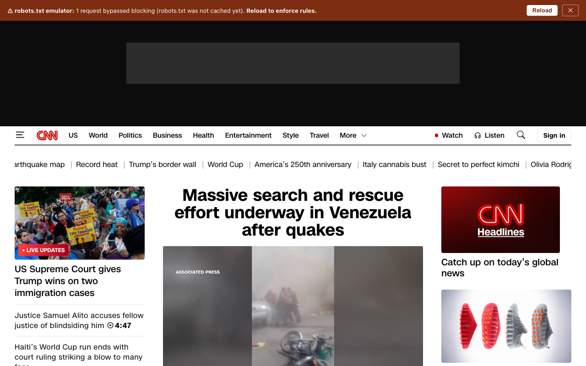
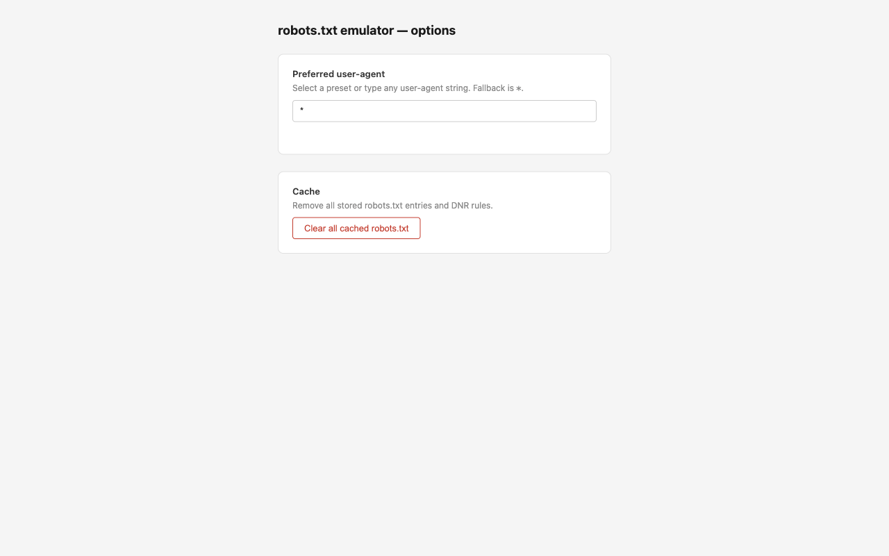

robots.txt crawler
Enforces robots.txt rules for your own browser traffic.
Every domain you visit is checked — disallowed paths are blocked before
the request reaches the network.





Uses Chrome's declarativeNetRequest API. Disallowed requests are cancelled before they reach the network — not just logged.
See every blocked request in real time: URL, method, resource type, reason, and the exact robots.txt line that triggered the block.
Inspect and edit any cached robots.txt directly in the browser. Changes take effect immediately — no refetch needed.
Type any URL to instantly see whether it would be allowed or blocked — and which rule is responsible.
Test as *, Googlebot, or any custom agent. Switching triggers an immediate rule rebuild for all cached domains.
First visits can't be blocked (rules must be installed ahead of requests). The extension detects this, logs it, and shows a reload banner.
DNR rules and cache survive browser restarts and service worker sleep. Revisited domains are blocked immediately from the first request.
Click a line number in the live log to jump directly to that line in the cache editor — host pre-selected and line highlighted.
Manifest V3 removed blocking webRequest, so blocking and observation are split across two mechanisms.
webNavigation.onBeforeNavigate fires when you navigate to any HTTP(S) page.
The extension fetches /robots.txt for the domain and caches it for 24 hours. Server errors trigger a deny-all; 4xx or no file trigger allow-all.
Each Allow and Disallow path is translated into a declarativeNetRequest dynamic rule and installed in Chrome — before any sub-resources fire.
Chrome evaluates the rules natively — no JavaScript involved. Longer, more specific patterns take priority; Allow beats Disallow at equal specificity.
A non-blocking webRequest listener re-runs Google's official RobotsMatcher for ground-truth logging. The exact robots.txt line number is resolved and sent to the live log.
Not yet on the Chrome Web Store — install manually from the latest release.
robotstxt-vX.Y.zip from the latest releasechrome://extensions in Chrome